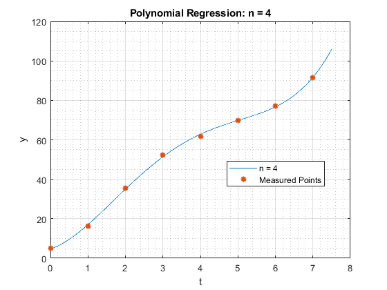

clc; clear; close all;
t = 0:7; b = [5.0 16.2 35.4 52.3 61.6 69.8 77.2 91.5]; max_fit_order = 6; plot_time = linspace(0,7.5,1000); figure; hold on; for fit_order = 0:max_fit_order coeffs = myPolyFitNormalEqn(t,b,fit_order); plot_data = zeros(1,length(plot_time)); for order = 0:fit_order plot_data = plot_data + coeffs(order+1).*plot_time.^order; end plot(plot_time, plot_data,"DisplayName",sprintf("n = %d",fit_order)); end xlabel("t") ylabel("y") plot(t,b,"*","DisplayName","Measured Points",'MarkerSize',10,'Linewidth',2) hold off; grid on; grid minor; legend(Location="best") for fit_order = 0:max_fit_order figure; coeffs = myPolyFitNormalEqn(t,b,fit_order); plot_data = zeros(1,length(plot_time)); for order = 0:fit_order plot_data = plot_data + coeffs(order+1).*plot_time.^order; end plot(plot_time, plot_data,"DisplayName",sprintf("n = %d",fit_order)); hold on; plot(t,b,"*","DisplayName","Measured Points",'Linewidth',1.5); hold off; title(sprintf("Polynomial Regression: n = %d",fit_order)) xlabel("t") ylabel("y") grid on; grid minor; legend(Location="best") end